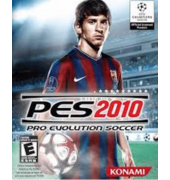

Game Up
PES 2010
Acerca de este juego
La versión 2010 de Pro Evolution Soccer se caracteriza por haber hecho realidad un buen número de sugerencias hechas por su comuidad de usuarios, que veían como los avances en anteriores versiones no satisfacían sus necesidades.
Una de las principales mejoras de PES 2010 se centra en la jugabilidad, haciendo más difícil el ataque rival. Los jugadores contrarios podrán cubrir aquellos espacios que previamente aprovechamos para atacarles y darnos así menos posibilidades de hacer gol.
Elimina anuncios y mucho más con Turbo

En el aspecto gráfico se ha mejorado la apariencia del terreno de juego en general y el efecto de iluminación sobre los elementos del juego (jugadores, árbitro, balón, porterías, etc.), dando una sensación de realismo mejorada con respecto a versiones anteriores.
Los movimientos de los jugadores también han sido perfeccionados y adaptados convenientemente a las situaciones del juego, haciendo más reales los giros, regates y disparos a puerta.
En el aspecto ténico, destaca el nuevo modo de organización del equipo, donde la defensa gana más protagonismo y donde se pueden configurar varios modos de juego (al toque, abrir espacios, balones largos, etc.).
Los jugadores también tendrán sus propiedades de juego particulares, de forma que nos será más fácil ver qué jugadores son más aptos para correr la banda, defender jugadas a balón parado u organizar el juego del equipo.
Los movimientos de los jugadores también han sido perfeccionados y adaptados convenientemente a las situaciones del juego, haciendo más reales los giros, regates y disparos a puerta.
En el aspecto ténico, destaca el nuevo modo de organización del equipo, donde la defensa gana más protagonismo y donde se pueden configurar varios modos de juego (al toque, abrir espacios, balones largos, etc.).
Los jugadores también tendrán sus propiedades de juego particulares, de forma que nos será más fácil ver qué jugadores son más aptos para correr la banda, defender jugadas a balón parado u organizar el juego del equipo.